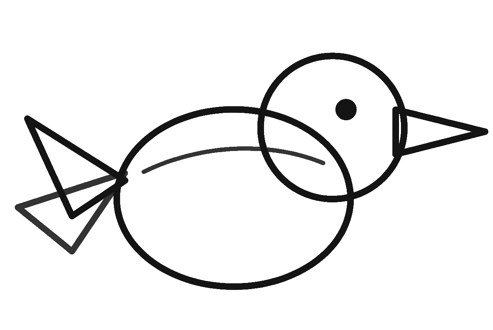
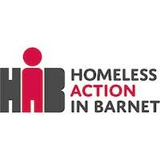

artsdepot
A creative home for everyone at Tally Ho Corner, with theatre, comedy, music, family shows, a gallery, café and classes. It is also our host and home for events such as Festive Fun.
Visit artsdepot
North Finchley is stronger when we work together. These are some of the local organisations we collaborate with.
A creative home for everyone at Tally Ho Corner, with theatre, comedy, music, family shows, a gallery, café and classes. It is also our host and home for events such as Festive Fun.
Visit artsdepotA welcoming, volunteer-run choir that rehearses on Thursday evenings and sings everything from pop and gospel to jazz, soul and world music. You don't need to read music to join.
Visit the choir
A dance school with a studio in Finchley, teaching children and adults for over 15 years in styles including ballet, street, tap and musical theatre.
Visit Innovation Dance
Independent local news for Finchley and the wider London Borough of Barnet, covering the council, community, sport, food and culture.
Read The FinchProvides food and essentials to people in need across Barnet, and relies on donations and volunteers from the local community to keep its shelves stocked.
Visit Finchley FoodbankA community housing charity offering safe, secure homes for older people in the area, with a history of local giving that stretches back to 1488.
Visit The Finchley Charities
Supporting Barnet's most vulnerable people since 1997 with a welcome, food, a hot shower and practical help towards finding accommodation and independence.
Visit HAB